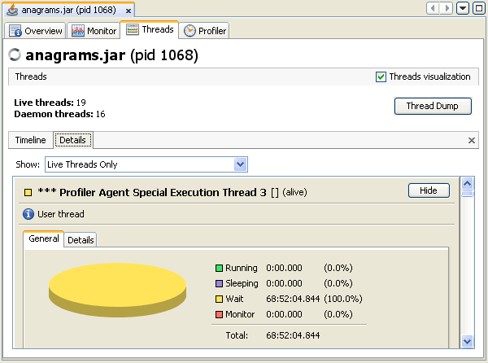
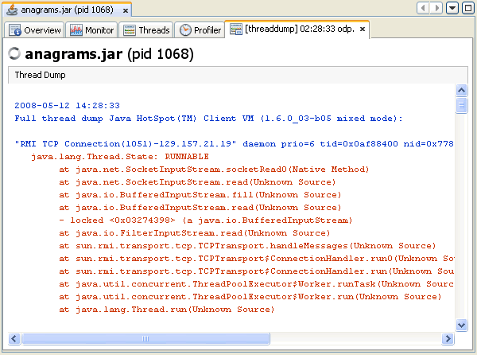

애플리케이션 쓰레드 모니터링
VisualVM은 애플리케이션별 탭에서 로컬및 원격 애플리케이션을 위한 데이터를 제공한다. 애플리케이션탭은 Applications창의 우측에 위치한 메인창에 나온다. 한번에 여러개의 애플리케이션탭을 열수도 있다. 각각의 애플리케이션탭은 애플리케이션에 대한 여러가지 정보를 보여주기 위해 각각의 하위탭을 포함한다.
쓰레드 동작상태 모니터링
VisualVM은 Threads탭에서 쓰레드의 동작상태에 대한 실시간 데이터를 보여준다.
알림: Threads탭에서 보여주는 정보는 JMX에 기초한 데이터를 제공한다.
대상 애플리케이션에 JMX연결을 맺을 수 있고 JMX정보를 얻을수 있다면 Threads탭이 보인다.
대상 애플리케이션이 JDK 1.6이상에서 동작하는 로컬 애플리케이션이라면 JMX연결은 즉시 맺어진다.
대상 애플리케이션이 JDK 1.5이하에서 동작한다면 JMX연결을 명시적으로 맺을 필요가 있을것이다.
JMX연결에 대한 좀더 세부적인 정보는 다음 문서를 참고하자.
기본적으로 Threads탭은 현재의 쓰레드 동작상태를 시간별로 보여준다. Details탭에서 쓰레드에 대한 좀더 세부적인 정보를 시간별로 보기 위해서 쓰레드를 클릭할 수 있다.
Timeline 탭
이 탭은 실시간의 쓰레드 상태를 시간별로 보여준다. 현재 보고있는 화면을 크게하거나 작게하고 원래 크기로 돌리기 위해 Timeline툴바의 버튼을 이용할수 있다. 드랍다운 형태의 메뉴를 사용해서 표시할 쓰레드를 선택할 수 있다. 모든 쓰레드를 보거나 살아있는 쓰레드 혹은 종료된 쓰레드 역시 선택할 수 있다. 쓰레드의 일부를 표기하기 위해 한개 혹은 여러개의 쓰레드를 선택할 수도 있다. Details탭에서 쓰레드의 세부정보를 보기 위해 쓰레드 타임라인의 쓰레드 중 하나를 더블클릭할 수 있다.
각각의 쓰레드의 타임라인은 쓰레드 각각의 상태에 대한 간단한 개요를 제공한다.
Details 탭
Details탭은 개별 쓰레드에 대한 좀더 세부적인 정보를 보여준다. 드랍다운 목록을 사용해서, 모든 쓰레드 또는 살아있는 쓰레드및 종료된 쓰레드를 선택할 수도 있다. Timeline뷰에서 선택한 쓰레드의 세부정보만을 표기하기 위해 선택할수도 있다. 각각의 쓰레드는 이름과 클래스명 그리고 현재 상태를 표시한다. 쓰레드의 짧은 설명또한 제공한다.
Details탭에 표시된 각각의 쓰레드는 다음의 2가지 탭을 가진다.
- General. 이 탭은 쓰레드 상태에 대한 통계정보를 표기한다.
- Details. 이 탭은 시점별로 쓰레드의 상태를 모두 나열한다.
각각의 쓰레드를 위한 타임라인은 쓰레드의 대략적인 개요를 제공한다.
쓰레드 덤프 생성
VisualVM을 사용해서 로컬 애플리케이션이 동작하는 동안 쓰레드 덤프를 생성할 수 있다. 쓰레드 덤프 생성은 애플리케이션을 멈추게 하지는 않는다. 쓰레드 덤프를 출력하면, 자바 쓰레드의 쓰레드 상태를 포함해서 쓰레드의 세부상태를 볼수 있다.
VisualVM을 사용해서 쓰레드 덤프를 출력하면, 툴은 애플리케이션의 활성화된 쓰레드의 많은 로그를 출력한다. VisualVM을 사용해서 쓰레드 덤프를 생성하는 것은 명령창에서 생성하는 방법보다 더 편리할 수 있다. 쓰레드 덤프의 많은 내용은 데드락이나 애플리케이션 행 상태와 같은 다양한 경우를 진단하는데 도움을 준다.
쓰레드 덤프 하위탭의 쓰레드 덤프 스크린샷
